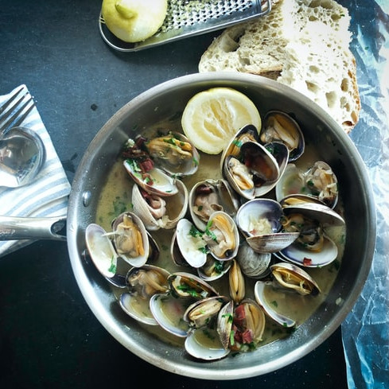

Almejas a la marinera

Ingredientes (4 personas):
- 800 gr de almejas
- 3 dientes de ajo
- 1 cebolla
- 125 ml de vino blanco
- aceite de oliva
- 1 guindilla (opcional)
- 1 cucharada de harina
- sal
- perejil
Elaboración de la receta:
Pon las almejas en un bol con abundante agua y una pizca de sal. Remuévelas un poco y déjalas reposar durante 1 hora para que suelten cualquier resto de arena que pueda tener. Enjuágalas.
Pela y pica la cebolleta y los dientes de ajo finamente y ponlos a rehogar en una tartera con un chorrito de aceite. Sazona y añade el trocito de guindilla.
Antes de que cojan color, agrega la harina y rehógala un poco. Vierte el vino, dale un hervor y agrega las almejas. Añade un poco de agua, tápalas y espera a que se abran.
Espolvoréalas con perejil picado y sirve.